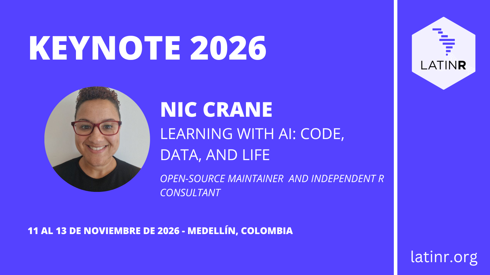
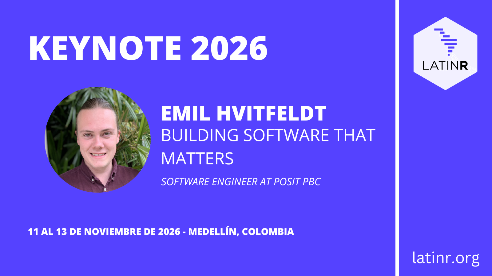
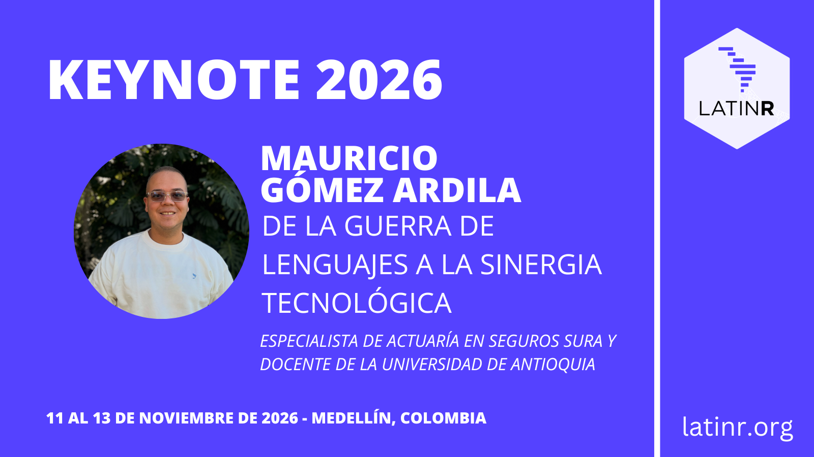

Conheça os keynotes da LatinR 2026
A nona edição da LatinR está chegando, e já podemos apresentar quem serão nossas e nossos keynote speakers. São três pessoas com uma trajetória de destaque no mundo do R, da ciência de dados e do software livre, que vão compartilhar as conferências centrais durante o evento. A seguir, contamos quem são e sobre o que vão falar.
Nic Crane: Learning with AI: Code, Data, and Life

12 de novembro - Parque Explora, 8:30-10:00.
Nic Crane trabalha com manutenção de software de código aberto, consultoria em R e também possui experiência em ensino. Integra o Comitê de Gestão do Projeto Apache Arrow e faz parte da equipe responsável pela manutenção do pacote Arrow para R, contribuindo para o ecossistema Arrow como um todo e para sua adoção em fluxos de trabalho de ciência de dados. Nic colabora com o pacote ellmer para R, além de ministrar cursos e escrever sobre o uso de modelos de linguagem de grande porte (LLMs) em R.
Em sua palestra, Nic vai contar sobre suas experiências tentando usar IA para melhorar sua vida como analista de dados, desenvolvedor de R e ser humano. Em um momento em que gerar ideias é fácil, mas saber quais valem a pena perseguir é mais difícil, como descobrir o que merece o seu tempo, o que realmente vai ter um impacto positivo e como fazer isso funcionar a seu favor, e não contra você?
Emil Hvitfeldt: Building software that matters

12 de novembro - Parque Explora, 14:00-15:30.
Emil Hvitfeldt é engenheiro de software na Posit e faz parte da equipe do tidymodels, que trabalha para aprimorar as capacidades de modelagem em R. Ele mantém vários pacotes nas áreas de modelagem, análise de texto e paletas de cores. Também está tentando transformar slidecrafting em um verbo respeitável. É coautor, junto com Julia Silge, do livro Supervised Machine Learning for Text Analysis in R e atualmente está trabalhando no livro Feature Engineering A-Z.
Construímos software por muitas razões e propósitos diferentes, e cada escolha é impactada pelo que veio antes dela. Alguns softwares são escritos para serem usados uma vez e descartados; outros devem ser usados por milhões de pessoas. Precisamos levar em conta não apenas como as pessoas usuárias de nossas soluções de software as utilizam, mas também como as partes interessadas são afetadas. O que acontece quando deixamos o código ser criativo, sem perder de vista o que realmente importa?
Mauricio Gómez Ardila: From the Language Wars to Technological Synergy

13 de novembro - Parque Explora, 16:00-17:30.
Mauricio Gómez Ardila é especialista em atuária na Seguros Sura e professor na Faculdade de Engenharia da Universidade de Antioquia, Colômbia. Combina matemática aplicada e aprendizado estatístico para analisar e solucionar problemas financeiros e de gestão de riscos. Sua experiência concentra-se no desenvolvimento de modelos de precificação de seguros e otimização de reservas técnicas, integrando métodos atuariais com análise avançada de dados.
Durante anos a discussão foi “R ou Python?”. Agora a pergunta é outra: por que continuar escolhendo? Esta palestra propõe ver a ciência de dados como o que ela realmente é: um ecossistema, não um catálogo de ferramentas que competem entre si. Nenhum componente tem valor isoladamente: a ingestão sustenta o armazenamento, o armazenamento habilita a modelagem, e a modelagem só importa se chegar à produção. Quando uma camada amadurece sem as demais, todo o sistema fica desequilibrado. Escolher uma linguagem é apenas uma decisão dentro dessa engrenagem, não seu eixo. A partir dessa perspectiva, vamos explorar as ferramentas que hoje rompem a barreira entre linguagens e ver como equipes produtivas deixaram de traduzir código para construir um único pipeline em que cada peça faz o que sabe fazer de melhor: o rigor estatístico do R combinado com as capacidades de integração e automação do Python. Os silos de código inevitavelmente criam silos de pessoas. Reconhecer essa dupla interdependência (técnica e organizacional) nos leva a uma conclusão definitiva: o melhor pipeline não fala apenas uma linguagem, ele fala as que o projeto precisar.
Você pode encontrar todas as informações sobre os keynotes na página de conferencistas do site da conferência.
Inscrição
Você pode encontrar todos os detalhes sobre os preços de inscrição, incluindo os valores de inscrição antecipada e regular da conferência, em nosso post de inscrição.